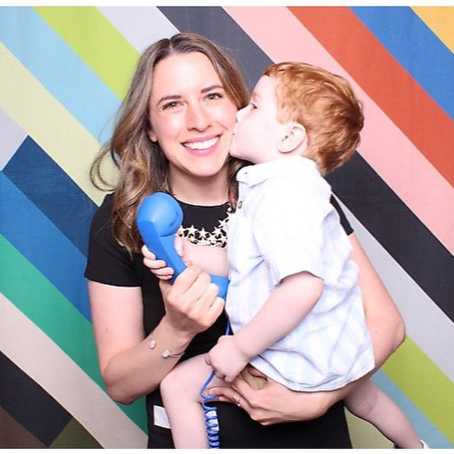

Our Story
Everything that exists was once imagined.
Welcome to Lexiconic Interiors, a Wilmington, NC interior design studio here to help you bring your interior dreams to life. We believe the best spaces are beautiful, functional, and personal. Designed around the way you live, the things you love, and the way you want to feel.

Lexi
Hi, I’m Lexi! I live in Wilmington, NC with my wonderful husband and son. I have always been interested in storytelling and capturing the moment. That passion led me to pursue a degree in film and, after graduation, a career spanning filmmaking, film festival programming, photography, and work in the film industry. Later, I transitioned into administration, event planning, and project management, where I discovered just how much I love bringing ideas to life and making all the moving pieces work together.
As I began envisioning a family and the kind of home I wanted to create, my dreams shifted. I realized that beautiful, functional spaces could set the stage for some of the most important stories of all: the stories of our lives! That realization led me to interior design, where I earned my interior design diploma through The Interior Design Institute.
Today, I love helping others bring their dreams to life by designing environments that enhance their lifestyles. My approach goes beyond styles and trends; it’s about creating spaces that feel good to you.
I believe that thoughtful design has the power to bring peace, comfort, excitement, and joy into our lives. Let’s have fun and make things beautiful together!
Justin
Every great space tells a story. Over the past 18 years as a Creative Director and visual artist, I’ve enjoyed a career that spans from an imaginative childhood in the Catskill Mountains to producing high-profile work for global brands. Throughout my career as a visual communicator I have developed a deep understanding of how visual elements shape the human experience. I have always believed that a space is fundamentally transformative. It acts as the silent narrator of our lives, intentionally setting the psychological and emotional tone for every encounter, relationship, and memory that unfolds within it.
This passion for environmental storytelling is the foundation of my newest venture alongside my best friend and creative collaborator, Lexi. Since meeting 11 years ago, we have cultivated a powerful synergy that drives our holistic approach to design and transformation. Together, Lexi and I build profound trust with our clients, merging our unique perspectives to craft bespoke spaces that don’t just look beautiful, but truly inspire the people who inhabit them.